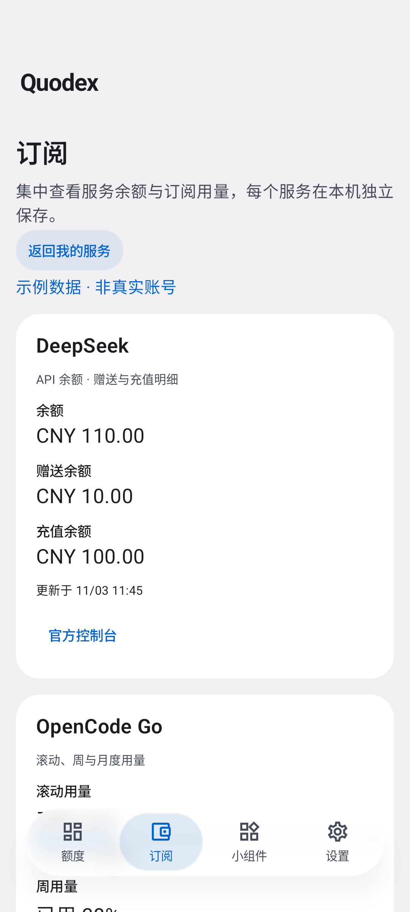
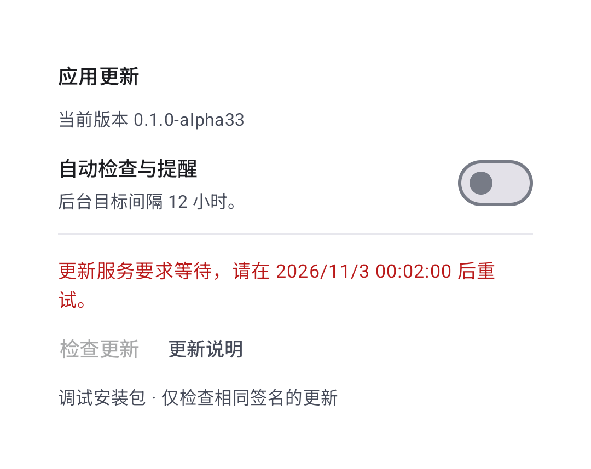

额度与重置时间
查看账号返回的额度周期、已用或剩余百分比，以及下一次重置时间。不同账号可用的额度窗口可能不同。
ANDROID · MIT LICENSE
集中查看 AI 服务额度与订阅，
把 Codex 用量，放在抬眼可见的地方。
Android 10+ · 中文 / English / 日本語
MIT 开源 · alpha32 预发布

历史原生截图 · 订阅 alpha32 / 组件 alpha31 · 示例数据
SMALL APP. CLEAR PICTURE.
从当前额度到每天的 token 用量，
了解使用节奏，安排接下来的工作。
查看账号返回的额度周期、已用或剩余百分比，以及下一次重置时间。不同账号可用的额度窗口可能不同。
标准额度、2×1 紧凑额度和 2×2 的 30 天热力图组件，均支持缩放、主题配置和手动刷新。热力图按七列日历铺满内容宽度，最小尺寸精简文字，把更多空间留给每天的格子。点击图表，直达应用内的 30 日视图。
近 7 天、30 天都能切换条形图与日历式热力图，并记住你的选择。App 热力图高度随周数调整，保持完整的星期与日期标签。切换保留时间范围与数据，不额外联网；缺失日期和真实零值分别标记。
发现新版本后，在 Quodex 内下载 APK、查看进度、取消或重试。校验通过后调起系统安装确认，无需跳转 GitHub 手动下载。
支持简体中文、English、日本語及跟随系统。页面、小组件、桌面额度图标和更新提示同步切换，浅色与深色界面采用玻璃风格悬浮导航。
额度、Token 统计、更新检查和 APK 下载支持有限次数的重试，并遵守服务端限流。刷新失败保留上次数据，下载中断后重新下载并校验。
VERSIONED PREVIEWS · ALPHA32
新增独立订阅页，分别连接 DeepSeek、OpenCode 与 Cursor。
alpha32 预发布已提供；Console 与 Cursor 为实验性兼容接入。
保留的 alpha32 历史原生截图来自 debug、API 37 Android 模拟器，均为本机示例数据，不是实际账户验证。查看 OpenCode Console（原 Zen）余额界面 · 接入步骤、接口依据与验证范围。
| 服务 | 查看内容 | 使用范围 |
|---|---|---|
| Codex | 额度、重置时间、Token 趋势 | App + 桌面组件 + 后台额度刷新 |
| DeepSeek | API 余额，分币种展示 | 订阅页前台查询 |
| OpenCode Go | 周期用量与重置时间 | 前台查询 · 接口迁移存在风险 |
| OpenCode Console | 工作区余额与可用额度 | 前台查询 · 实验性接入 |
| Cursor | 个人模型用量与计费周期 | 前台查询 · 实验性接入 |
每项服务独立连接、刷新和断开；未知数据不补零，失败保留上次数据。新服务的真实账号覆盖仍待验收，桌面与后台功能目前仅面向 Codex。查看接入步骤与兼容范围。
ALPHA31 · CODEX CHARTS
热力图横向周一至周日，每行一周，铺满可用宽度。
7 天更紧凑，30 天更舒展，也能随时切回条形图。
均为 Android 模拟器截图，使用示例或合成数据。导航截图来自 alpha26，为历史资料，三项导航不代表 alpha32 的四项导航；热力图、条形图与 2×2 组件为 alpha31 debug 历史截图，使用同一份示例数据。安装包与校验信息以 GitHub Releases 为准。查看深色导航 · 查看深色热力图 · 图表与组件说明。已有桌面实例可能保留旧尺寸，缩小或重新添加即可使用 2×2 布局。
ARCHIVE · ALPHA22 NATIVE MOTION
页面淡入、额度填充、柱图依次展开。
这段 alpha22 历史实录保留动效设计的来源。
切换页面时淡入，连接按钮轻扫一道光，按下时微微收缩。
进度条平滑填入；数字直接显示实际值，随时可以读数。
切换近 7 天与 30 天，柱条错峰升起。同一范围更新时，高度自然过渡。
应用动效遵循 Android 系统动画设置，关闭动画后直接呈现结果。网页预览由你手动播放。
点击播放 · 约 12 秒 · 无声
ARCHIVE · ALPHA22
以下保留 alpha22 的浅色与深色截图，
当前界面请看上方功能展示。
以上为 alpha22 发布前的 Android 实际截图，均使用示例数据，作为历史资料保留。下载内容与版本说明以 GitHub Releases 为准。
BUILT FOR YOUR DAILY FLOW
显示最后更新时间，刷新失败时保留上次数据。已知多少，就展示多少。
UPDATE CHECKS · ALPHA33 SOURCE
alpha33 源码改用独立的公开更新索引，避免 GitHub REST API 共享 IP 配额影响。服务端要求等待时，显示具体重试时间，到期后恢复检查按钮。网络与 CDN 缓存仍可能延迟检查。
旧版本受限时，覆盖安装即可
如果 alpha31／alpha32 的检查仍被等待状态阻塞，请从 Releases 下载实际已发布的 alpha33 或更高版本，使用相同签名覆盖安装，无需卸载。安装由 Android 确认。

alpha33 debug · API 37 模拟器原生截图 · 测试注入的等待时间，不是真实限流。发布版本以 Releases 的实际 APK 为准。
查看更新与重试说明A FEW STEPS. A CLEARER DAY.
从 GitHub Releases 下载 APK。支持 Android 10+，安装由系统确认；同页提供校验和与来源信息。
获取安装包先体验示例模式，再连接 Codex。其他服务在“订阅”页单独连接，凭据保存在本机。
阅读接入指南添加 Codex 额度或 2×2 热力图组件。已有用户可在设置中检查、下载并安装更新。
桌面添加帮助Alpha 预发布，尚未上架 Google Play。首次安装可能需要授予安装来源权限；应用内更新同样由你确认。后台同步受系统、网络与省电策略影响。
BUILT IN THE OPEN · MIT
查看实现、反馈问题，或贡献一处翻译。
Quodex 的下一步，也可以从你的使用体验开始。
Quodex 是独立的第三方开源工具，与 OpenAI、DeepSeek、OpenCode 或 Cursor 无隶属关系。服务名称仅用于说明所连接的产品。
Codex 额度可以手动刷新，也支持后台周期同步；新增订阅查询仅在前台打开订阅页或手动刷新时运行，五分钟内使用缓存。实际后台运行时间受 Android 调度、网络与省电策略影响；token 统计可能存在服务端延迟。
小米、Redmi、POCO 的应用内添加入口会提醒检查“桌面快捷方式”权限，可打开应用信息，再进入权限管理查找该项；系统菜单名称可能不同。提醒不代表应用已检测到权限被拒绝。授权后选择“继续添加”，也可从系统桌面组件列表手动添加。查看权限指引。
桌面启动器可能保留旧实例的大小。长按组件缩小，或删除后重新添加，即可使用默认 2×2 布局。